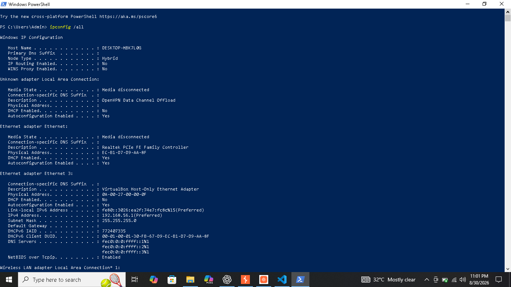
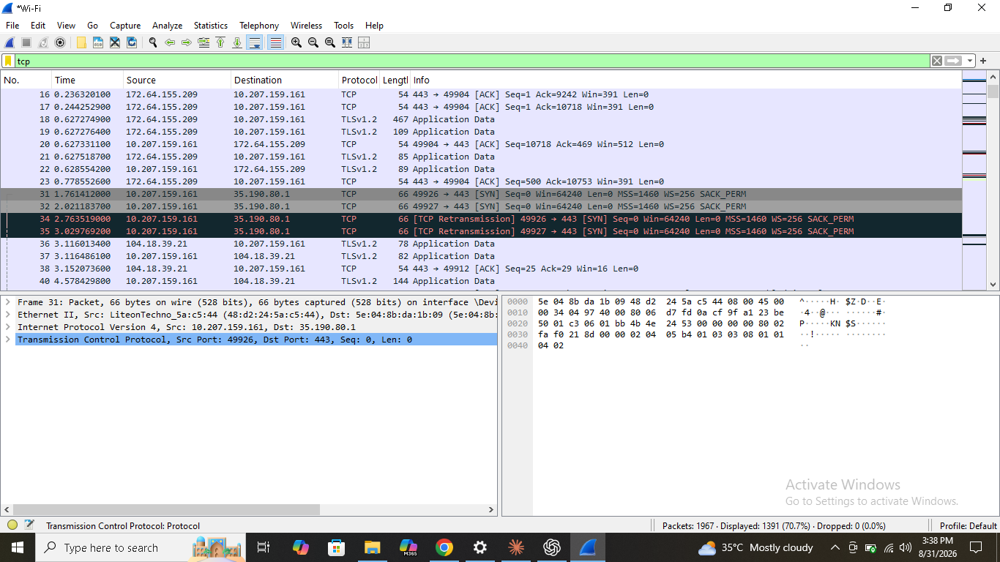
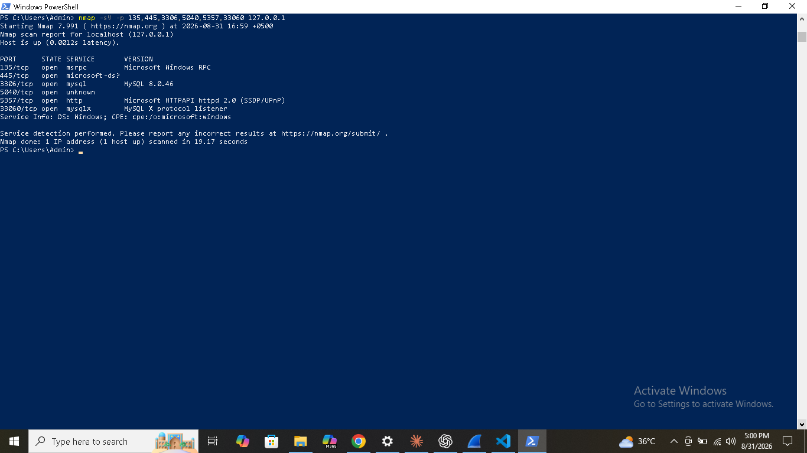

CYBERSECURITY PORTFOLIO
Building practical skills in network analysis, web security, vulnerability assessment and security automation.
I am a cybersecurity learner focused on developing practical skills through hands-on projects, controlled security labs and network analysis.
My practical experience includes Windows networking, Wireshark, Nmap, Burp Suite and Python-based security tools. I document my work through practical evidence and GitHub projects.
My current focus is web security, vulnerability analysis and building practical cybersecurity services for freelance and remote opportunities.
Practical cybersecurity services based on hands-on learning, network analysis and controlled security testing.
Basic network discovery, port analysis and identification of exposed network services.
Basic web security testing through HTTP request analysis and controlled security labs.
Identify basic security weaknesses and document findings with clear technical evidence.
Review HTTP security headers and identify missing or incorrectly configured protections.
Inspect SSL/TLS certificates, validity and basic configuration information.
Perform controlled Nmap scans to identify hosts, ports, services and basic operating system information.
Practical Windows networking, Wireshark packet analysis, network discovery, port scanning and service enumeration.
View Project →10 controlled web security labs completed using Burp Suite, covering practical request analysis and vulnerability testing.
View Project →Python-based website security auditing with structured findings, security reports and vulnerability analysis.
View Project →Practical Python security tools for network information, port scanning and security-focused automation.
View Project →Security header analysis and SSL/TLS certificate inspection using Python-based security tools.
View Project →Practical evidence from controlled cybersecurity exercises, network analysis and security testing.
IP configuration, routing, DNS, connections, processes, adapters and ARP analysis.

DNS, TLS, TCP SYN packets and TCP three-way handshake analysis.

Network discovery, port scanning, service detection and OS identification.

Hands-on security labs completed in controlled learning environments to develop practical web security and network analysis skills.
I am open to cybersecurity freelance projects, remote opportunities, collaboration and practical security work.
For project inquiries or professional opportunities, feel free to get in touch.
Email Me